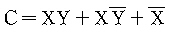

정보기기운용기능사 (2004-07-18 기출문제)
1과목: 전산 기초 이론
1. 다음에 열거한 것 중에서 출력 장치가 아닌 것은?
- 카드 리더(Card Reader)
- 디스플레이(Display)
- 카드 펀치(Card Punch)
- 플로터(Plotter)
(정답률: 75%)

2. 다음 보조 기억 장치 중에서 얇고 유연한 플라스틱 디스크에 자성 물질을 입힌 것은?
- 마그네틱 코어(Magnetic Core)
- 마그네틱 드럼(Magnetic Drum)
- 마그네틱 테이프(Magnetic Tape)
- 플로피 디스크(Floppy Disk)
(정답률: 67%)
3. 정보 표현 단위가 아닌 것은?
- 리스트(List)
- 비트(Bit)
- 단어(Word)
- 바이트(Byte)
(정답률: 80%)
4. 프로그램언어 중 기계어에 가장 가까운 것은?
- ASSEMBLY어
- BASIC
- FORTRAN
- COBOL
(정답률: 79%)
5. 전자 계산기 논리 회로중 항상 반대의 결과를 나타내는 회로는?
- AND 회로
- FLIP - FLOP 회로
- OR 회로
- NOT 회로
(정답률: 86%)
6. 전자계산기를 동작원리에 따라 분류했을 경우 적절하지 않은 것은?
- 아날로그형(Analog)
- 제어형(Control)
- 하이브리드형(Hybrid)
- 디지탈형(Digital)
(정답률: 70%)
7. 프로그램의 잘못을 수정해 나가는 작업은?
- 펀칭(Punching)
- 디버깅(Debugging)
- 레코드(Record)
- 코딩(Coding)
(정답률: 84%)
8. 다음의 논리식을 간략화한 것은?

- 1
- 0
- X
- XY
(정답률: 52%)
9. 다른 기억장치에 비하여 고속, 소형이고 가격이 저렴하여 많이 사용되는 기억장치는 ?
- 집적회로 기억장치
- 자성박막 기억장치
- 자기 코어 기억장치
- 자기 드럼 기억장치
(정답률: 56%)
10. 다음중 순서도의 작성은 언제하여야 적당한가?
- 타당성 조사 후
- 입·출력 설계 후
- 프로그램을 코딩한 후
- 자료 입력 후
(정답률: 71%)
2과목: 정보 기기 운용
11. 다음중 인쇄장치를 올바르게 연결한 것은?
- 자기드럼 - 자기디스크 - 자기테이프 - 데이타set장치
- 드럼방식 - 체인방식 - 밴드방식 - 레이저방식
- 채널방식 - 활자방식 - 고속방식 - 저속방식
- 호퍼 - 켑스턴 - 롤러 - 스태커
(정답률: 60%)
12. 150[Ω]의 저항 3개를 조합하여 얻어지는 가장 작은 합성저항 값은 ?
- 360[Ω]
- 240[Ω]
- 40[Ω]
- 50[Ω]
(정답률: 87%)
13. 100[V]의 전위차로 2[A]의 전류가 3분간 흘렀다고 한다. 이때 이 전기가 한일은 얼마인가 ?
- 18000[J]
- 36000[J]
- 28000[J]
- 3600[J]
(정답률: 77%)
14. 복수개의 데이터신호를 중복시켜서 하나의 데이터신호로만들어 내는 데이터 전송기기는?
- CCTV
- 다중화기
- 제어기
- 모뎀기
(정답률: 82%)
15. 공장에서 생산된 디스켓은 Track과 Sector를 만들어 주어야 하는데 이때 사용하는 명령은?
- LOAD
- BOOTING
- COPY
- FORMAT
(정답률: 62%)
16. 통신 워드프로세서의 설명으로 맞지 않는 것은?
- 상대편 컴퓨터에 문서를 보낼 수 있고 기억장치에문서를 수록할 수도 있다.
- 워드프로세서의 기능이 있는 Computer간의 통신을 말한다.
- 전송제어가 필요하지 않기 때문에 회선을 필요로 하지 않는다.
- 교환회선 또는 전용회선을 통해 전송을 제어한다.
(정답률: 76%)
17. Word Processor에서 각 기능의 명령이 가지고 있는 기본적인 값은?
- 디폴트(Default)
- 래그드(Ragged)
- 로그인(Log-in)
- 옵션(Option)
(정답률: 64%)
18. 전화선을 이용하지 않는 정보형태는?
- FAX
- Teletext
- Telex
- ARS
(정답률: 62%)
19. 제어장치에서 한 명령어가 수행되는 시간을 나타낸 것은?
- 명령어호출 싸이클(Fetch Cycle)
- 명령어 싸이클(Instruction Cycle)
- 메모리 실행 싸이클(Execution Cycle)
- 메모리 싸이클(Memory Cycle)
(정답률: 57%)
20. 전송로에 디지털 신호를 전송하기 위한 신호변환 장치는?
- DTE
- MODEM
- FEP
- DSU
(정답률: 52%)
21. 다음 기기중 음향 결합기와 직접 연결되는 것은?
- 모뎀(MODEM)
- 단말기(Terminal)
- 팩시밀리(Facsimile)
- 통신제어기(CCU)
(정답률: 51%)
22. 사무자동화를 위한 자료준비기기에 속하지 않는 것은?
- COM
- 워크스테이션
- 단말기
- 워드프로세서
(정답률: 52%)
23. 전류의 세기[A]를 단위시간[S]과 이동전기량[C]와의 관계를 정의하면 다음 중 어느 것이 맞는가?
- I = t / Q[A]
- I = Q·t[A]
- I = Q2 / t[A]
- I = Q / t[A]
(정답률: 51%)
24. 아날로그 전송매체를 통해 데이터(data)를 전송하는데 필요한 기기는 무엇인가?
- 멀티플렉서(Multiplexer)
- 변복조기(Modem)
- 믹서(Mixer)
- 검파기(Detector)
(정답률: 71%)
25. 다음 팩스밀리의 수신기록방식 중 고속기록이 가능하고에너지가 적게 드는 방식은?
- 방전기록방식
- 정전기록방식
- 침전기록방식
- 감열기록방식
(정답률: 59%)
26. 시간에 따라 크기와 방향이 주기적으로 바뀌는 전압 또는전류를 나타낸 것은?
- 맥류
- 직류
- 와전류
- 교류
(정답률: 76%)
27. 광학적인 방법으로 문자나 그림을 읽어들여 전기적인 신호로 바꾸어 통신망을 이용해 원거리에서 이를 받아 복사해내는 사무기기를 나타낸 것은?
- 팩시밀리
- 전자회의
- 복사기
- 전자우편
(정답률: 81%)
28. 정보기기 관련 시설에 대한 화재 발생시 사용할 수 있는 소화기로 가장 적당한 것은?
- 프레온 가스소화기
- 스프링클러
- 이산화탄소 소화기
- ABC 분말소화기
(정답률: 85%)
29. 단말기에서 작업할 때 작업자세에 대한 설명 중 옳지 않은 것은?
- 표시화면의 밝기는 500 Lux 정도로 한다.
- 무릎의 각도는 90° 이상을 유지한다.
- 눈에서 화면까지의 거리는 40 - 50 ㎝를 유지한다.
- 모니터 화면의 높이는 눈 높이보다 높게 한다.
(정답률: 86%)
30. 200[V], 400[W]의 전열기를 사용하고 있다. 이때 이 전열기에 생기는 부하저항은 몇 [Ω]인가?
- 100
- 200
- 400
- 300
(정답률: 42%)
3과목: 정보 통신 일반
31. 데이터통신의 이용사례 중 크레디트 체크(Credit Check)는 어느 작업 업무에 해당하는가?
- 정보 검색(Information Retrieval)
- 시분할 대화(Time-sharing Conversation)
- 원시 데이터 입력 및 수집
- 원격 일괄 처리 (Remote Job Entry)
(정답률: 56%)
32. 데이터통신 시스템의 기본 구성요소로 짝지어진 것은?
- 데이터신호계와 처리계
- 데이터가공계와 응용계
- 데이터전송계와 처리계
- 데이터생산계와 분배계
(정답률: 81%)
33. 다음 전송매체 중 CATV 방송시스템에서 가입자 댁내 인입전송선로에 가장 적합한 것은?
- 동축케이블
- 국내(PE)케이블
- 폼스킨(F/S)케이블
- 쌍연케이블
(정답률: 88%)
34. 양쪽으로 신호의 전송이 가능하나 2선식 선로운용에서 필요한 방향으로만 전송이 이루어지는 통신방식은?
- 단향통신방식
- 다중통신방식
- 전이중통신방식
- 반이중통신방식
(정답률: 69%)
35. 단위펄스의 전송시간 길이가 2[㎳]이면, 보오(Baud)는 얼마인가?
- 50 [Baud]
- 200[Baud]
- 2000[Baud]
- 500[Baud]
(정답률: 30%)
36. HDLC(High-level Data Link Control) 프레임(Frame)을 구성하는 순서로 바르게 열거한 것은?
- 프레그, 주소부, 정보부, 제어부, 검색부, 프레그
- 프레그, 주소부, 제어부, 정보부, 검색부, 프레그
- 프레그, 제어부, 주소부, 정보부, 검색부, 프레그
- 프레그, 검색부, 주소부, 정보부, 제어부, 프레그
(정답률: 57%)
37. 정보량의 개념에서 데이터 통신속도를 표현하는 단위로 가장 일반적인 것은?
- [Rpm]
- [Sec]
- [Wpm]
- [Bps]
(정답률: 83%)
38. WWW 서비스를 이용하여 원하는 정보를 얻고자 할 때, WWW서버에 접속하여 HTML 문서를 받을 수 있는 클라이언트용도구는?
- IPv6
- Browser
- Domain
- Http
(정답률: 45%)
39. 입력신호를 펄스화 함과 동시에 그 진폭에 따라 부호로바꾸어 송출하는 방식은?
- PWM
- PCM
- PAM
- PPM
(정답률: 64%)
40. ITU-T X 시리즈 권고안 중 공중데이터 네트워크에서 패킷형 터미널을 위한 DCE와 DTE 사이의 접속 규격은?
- X.3
- X.21
- X.40
- X.25
(정답률: 76%)
41. 헤딩과 텍스트로 이루어진 정보 메세지가 3개의 블록으로 분할되어 전송될 경우 최종 블록에 들어갈 전송제어 캐릭터는?
- ETB
- STX
- EOT
- ETX
(정답률: 54%)
42. 데이터통신의 비트 에러율(BER)은?
- 에러가 발생한 비트 수/총 전송한 비트 수
- 총 전송한 비트 수/에러가 발생한 비트 수
- 에러가 발생한 비트 수/(에러가 발생한 비트 수 + 총전송한 비트 수)
- 총 전송한 비트 수/(에러가 발생한 비트 수 + 1)
(정답률: 62%)
43. LAN망을 구성시 거의 채택하지 않는 네트워크 형태는?
- 스타(Star)형
- 링(Ring)형
- 그물(Mesh)형
- 버스(Bus)형
(정답률: 57%)
44. 중앙에 컴퓨터가 있고 이를 중심으로 터미널이 연결되어 있는 네트워크 형태는?
- 트리(Tree)형
- 그물(Mesh)형
- 링(Ring)형
- 스타(Star)형
(정답률: 70%)
45. 전선에 흐르는 전류의 단속(ON-OFF)에 의한 펄스신호의 형태로 정보를 전달하는 통신방식으로 데이터통신의 모태라고 할 수 있는 것은?
- 수기
- 전신
- 우편
- 전화
(정답률: 64%)
46. 광 섬유는 코아 및 클래딩으로 구성된다. 빛이 통과하는주 통로는?
- 코아와 클래딩 경계면
- 코아와 클래딩
- 클래딩
- 코아
(정답률: 68%)
47. 통신제어 장치의 기능과 가장 관계가 적은 것은?
- 전송 데이터의 에러제어
- 통신회선의 접속과 절단 제어
- 데이터 통신 신호의 변환
- 전송로와의 전기적인 인터페이스
(정답률: 36%)
48. 다음 중 정보의 처리가 가장 신속하도록 구성한 데이터통신시스템은?
- 실시간 시스템(Real Time System)
- 축적후 전진시스템(Store And Forward System)
- 오프-라인 시스템(Off-Line System)
- 배치처리 시스템(Batch Process System)
(정답률: 87%)
49. 마이크로파(Microwave) 통신방식과 관계 없는 것은?
- 이동통신 수단으로도 이용되고 있다.
- 중계거리를 고려하여야 한다.
- 전자파를 이용하는 무선통신방식이다.
- 광을 이용하므로 전송속도가 빠르다.
(정답률: 67%)
50. 무선(Wireless) 전화기에 관한 설명 중 틀린 것은?
- 송수화기 코오드가 없는 것이 특징이다.
- 단방향 통신만 되는 무선수신기의 일종이다.
- 송수화기에 전파의 발· 수신부가 부착된 전화기이다.
- [㎒]대의 주파수를 사용하는 무선전화기의 일종이다.
(정답률: 71%)
4과목: 정보 통신 업무 규정
51. 저주파수란 얼마 정도의 주파수대역을 말하는가?
- 300 ~ 3400[㎐]
- 20[㎐] 이하
- 300[㎐] 미만
- 3400[㎐] 초과
(정답률: 65%)
52. 부가통신사업을 경영하려면 어떤 절차를 밟아야 하는가?
- 한국통신사장의 허가를 받아야 한다.
- 산업자원부장관의 인가를 받아야 한다.
- 자치단체장에 등록만 하면 된다.
- 정보통신부장관에 신고하여야 한다.
(정답률: 77%)
53. 기간통신사업자가 제공하는 정보통신역무에 관한 요금 및 이용조건을 규정한 것은?
- 업무규정
- 요금규정
- 이용약관
- 기술기준
(정답률: 81%)
54. 다음 중 정보통신부장관의 업무로 볼 수 없는 것은?
- 전기통신 기본계획수립
- 전기통신에 관한 년차보고
- 전기통신에 관한 종합적인 정부시책 강구
- 전기통신사업 경영관리
(정답률: 66%)
55. 우리나라에서 전기통신사업의 구분은?
- 일반통신사업, 특정통신사업, 방송통신사업
- 전화통신사업, 정보통신사업, 부가통신사업
- 기간통신사업, 별정통신사업, 부가통신사업
- 유선통신사업, 무선통신사업, 정보통신사업
(정답률: 84%)
56. 전기통신설비가 다른 사람의 전기통신설비와 접속되는 경우 그 건설과 보전에 관한 책임 등의 한계를 명확하게 하려할 때 무엇을 설정 하는가?
- 분계점 설정
- 책임한계점 설정
- 상호접속망 설정
- 접속점 설정
(정답률: 76%)
57. 컴퓨터 등 정보처리능력을 가진 장치에 의하여 전자적인형태로 작성, 송· 수신 또는 저장된 정보를 무엇이라고하는가?
- 정보통신
- 전산파일
- 전자문서
- 프로그램
(정답률: 68%)
58. 통신보안의 필요성에 관련된 사항이 아닌 것은?
- 통신기술의 고도화에 따른 이용도 증가
- 정보통신망사업 홍보내용 누출방지
- 통신내용은 풍부한 정보의 원천
- 통신정보의 수집을 위한 도청능력 향상
(정답률: 52%)
59. 불온통신의 대상이 아닌 것은?
- 반국가적 행위의 수행을 목적으로 하는 내용의 통신
- 개인의 이익을 도모할 목적으로 발신한 통신
- 선량한 풍속, 사회질서를 해하는 내용의 통신
- 범죄 행위를 목적으로 이를 교사하는 내용의 통신
(정답률: 68%)
60. 통신선로설비의 회선 상호간을 직류 500[V] 절연저항저항계로 측정하여 10[㏁]이상 되어야 하는 것은?
- 절연저항
- 선로저항
- 고유저항
- 합성저항
(정답률: 54%)